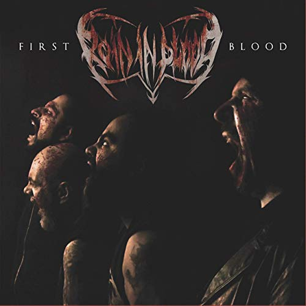

<div id="fb-root"></div>
<script async defer crossorigin="anonymous" src="https://connect.facebook.net/es_LA/sdk.js#xfbml=1&version=v12.0" nonce="e0Kk3cAa"></script>
<script src="http://code.jquery.com/jquery-2.1.4.min.js"></script>
<script src="./js/activetop.js"></script>
<link rel="stylesheet" href="./css/dzulum.css">
<script src="./js/topnav.js"></script>
<link rel="stylesheet" href="https://cdnjs.cloudflare.com/ajax/libs/font-awesome/4.7.0/css/font-awesome.min.css">
<div class="col-12 blackt separador center">

</div>
<div class="topnav" id="myTopnav">
  <a href="default.html" class="MB-ForeverRaw"><i class="fa fa-fw fa-home"></i>Main</a>
  <a href="menu2.html" class="MB-ForeverRaw"><i class="fa fa-anchor"></i>Social</a>
  <a href="menu3.html" class="MB-ForeverRaw"><i class="fa fa-camera"></i>Press Kit</a>
  <a href="#about" class="MB-ForeverRaw"><i class="fa fa-download"></i>Media</a>
  <a href="#about" class="MB-ForeverRaw"><i class="fa fa-user-circle-o"></i>Line-Up</a>
  <a href="javascript:void(0);" class="icon" onclick="myFunction()">
    <i class="fa fa-bars"></i>
  </a>
</div>


<div class="col-12 blackt separador">
  <div class="col-12">
<div class="darkgreyt separador esquinas center">
  
</div>

<div class="col-12 darkgreyt">
  
  <!--div class="col-4">
  <div class="center">  
    <a class="twitter-timeline" data-width="100%" data-height="450" data-dnt="true" data-theme="dark" href="https://twitter.com/RainInbloodband?ref_src=twsrc%5Etfw">Tweets por RainInbloodband</a> <script async src="https://platform.twitter.com/widgets.js" charset="utf-8"></script>
  </div>
  </div>

  <div class="col-4 sociales">
      <h1>Sociales</h1>
<ul>
    <li><a href="#">Facebook</a></li>
    <li><a href="#">Twitter</a></li>
    <li><a href="#">Github</a></li>
    <li><a href="#">Tumblr</a></li>
    <li><a href="#">Disqus</a></li>
    <li><a href="#">e-Mail</a></li>
    <li><a href="#">RSS</a></li>
</ul>
  </div>
  <div class="col-4"-->
  <div class="fb-page" data-href="https://www.facebook.com/RainInBloodBand/" data-tabs="timeline,messages,events" data-width="" data-height="350" data-small-header="false" data-adapt-container-width="true" data-hide-cover="false" data-show-facepile="true"><blockquote cite="https://www.facebook.com/RainInBloodBand/" class="fb-xfbml-parse-ignore"><a href="https://www.facebook.com/RainInBloodBand/">Rain in Blood</a></blockquote></div>
  </div>    
  </div>